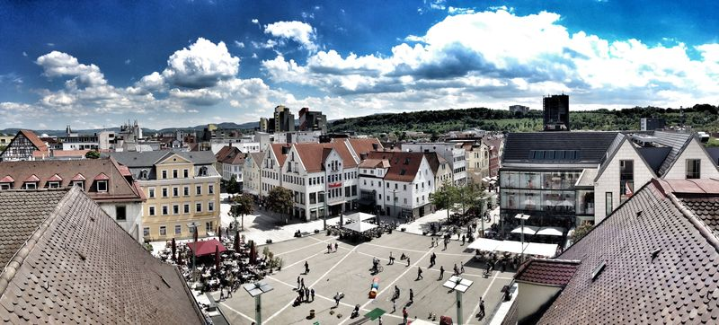
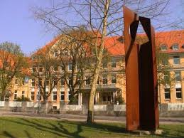
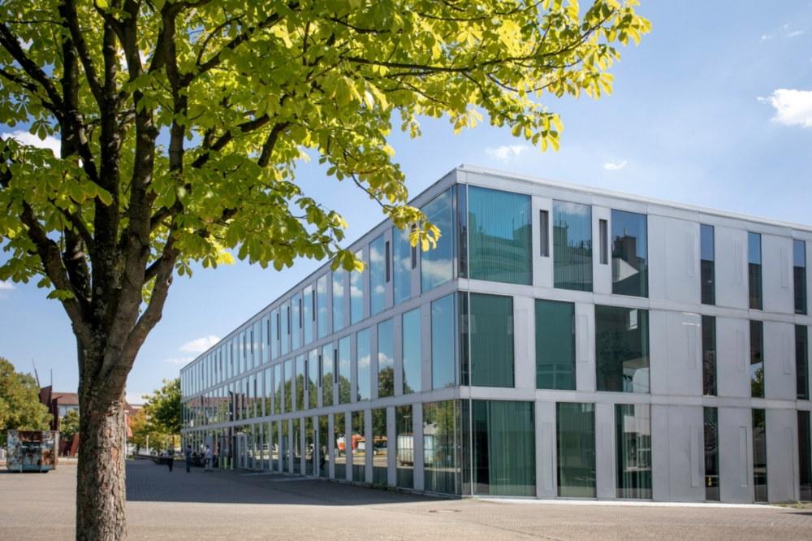
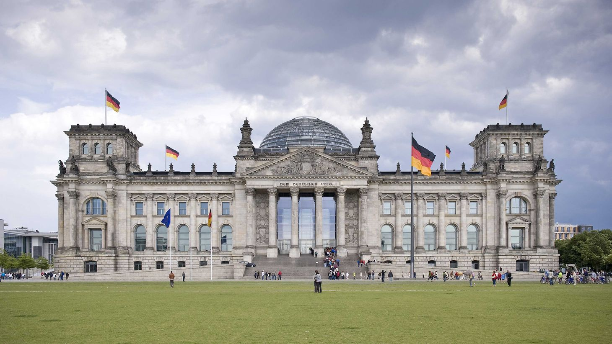
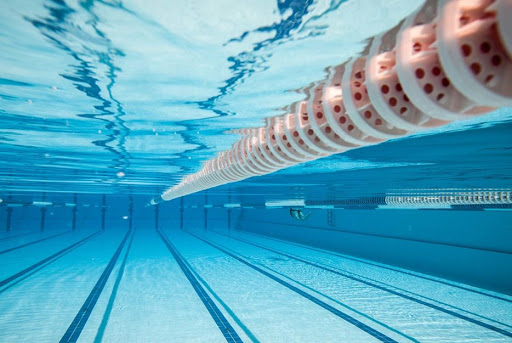

Welcome.
I, Raman Sharma, created this website to tell you who I am! Why? Well, since a picture says more than a thousand words, a person can describe him- or herself by means of pictures that in some way tell a story about him or her. So, let me tell you something about me with the help of the slideshow below.

Göppingen
Home Town

Mörike Gymnasium
Secondary schooling

Computer Science Institute
University of Stuttgart

Bundestag
Berlin, Germany

Red Fort
Delhi, India

❮
❯
Swimming pool
Health
The first picture tells you where I am from. It depicts Goeppingen, a town in southern Germany, part of the Stuttgart Region of Baden-Württemberg. I was born and raised in Goeppingen, and till this day I have been living here.
The second picture tells you something about my schooling education. Excuse me for the
bad quality of the picture as I could not find a better picture of my school since
there are not many of it available on the internet. Nonetheless, this picture
depicts the Moerike Gymnasium, the school I attended from the 5th grade to the 12th grade.
If you are unfamiliar with the education system in Germany, let me give you a brief summary of it:
Children first attend primary school for four years. In their fourth year the decision is made on how to
continue their education. The secondary school system is divided into:
- Hauptschule – for less academic students
- Realschule – for intermediary students
- Gymnasium – for academic students
The Hauptschule ends after the 9th school grade with the Hauptschulabschluss
certificate, the Realschule
after the 10th grade with the Realschulabschluss certificate. After that, young people can either start
some form of vocational training or continue schooling. The Gymnasium ends after the 12th grade
with the Abitur certificate, the entitlement to study at a university.
So, I guess, now you know that I am not that stupid, right?
The third picture tells you something about my college studies. It depicts the Computer Science Institute of the University of Stuttgart, in Stuttgart. After completing my school education with the Abitur certificate I decided to purchase a Computer Science degree. I consider myself as a creative head. Also, I consider myself as a flexible person, i.e. I am willing to do anything that sounds interesting. Creativity and varity are two things that perfectly describe Computer Science, atleast in my opinion. Computer Science covers a varity of fields, such as Machine Learning, Cloud Computing, Mobile Computing and many more. Computer Science gives you the freedom of choice. You can accomplish a task in different ways.
The forth picture depicts the Reichstag building, located in Berlin, Germany. The German Bundestag is the national Parliament of the Federal Republic of Germany. Its seat is the Reichstag Building. What does this picture say about me? On the one hand, it emphasizes the fact that I am fully integrated, be it the language, abiding by the rules, or be it the understanding of the German culture and history. For me personally, integration has never been an issue. As long as you abide by the rules and carry yourself gently, no one can harm you.
The fifth picture depicts the Red Fort, a historic fort in the city of Delhi (in Old Delhi) in India. By the end of the last paragraph, you probably came to the correct conclusion that I am a German with a migrant background. Both my parents are from India. They migrated to Germany in the early 90s. While being fully integrated in Germany, I also accept and respect my Indian heritage.
The sixth, i.e. last picture depicts a snapshot of a swimming pool taken under the water. It tells you that I am very health conscious. As important as work is, health should not be neglected. Your health is your wealth. In my school time, I used to play for a football team in Goeppingen. Afterwards, I joined a swimming club, because swimming is one of the best exercises, as it engages almost all body parts. After my schooling education, I briefly joined a fitness club. Since October 2019, I have picked up on swimming again.